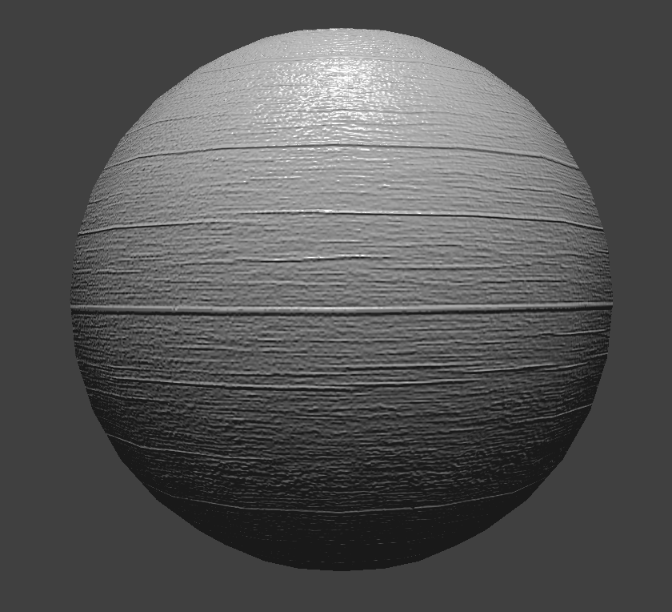

Overview
In this project, we simulated the mechanics of cloth in various situations. We also applied various forms of shading to the cloth using GLSL shaders. The cloth was modelled as a system of point-masses and springs connecting them. To calculate movement across time, Verlet integration was used. Self-collisions were implemented by spatially hashing the point-masses and checking collisions between point-masses in the same buckets.
Part I: Masses and springs
In this part, we modelled the cloth using point masses and springs. Because cloth is complex, we need multiple types of constraints to accurately model it. The three types of constraints used are structural, bending, and shearing.

|
Part II: Simulation
In this part, we simulated timesteps by calculating the forces acting on each point-mass using Verlet integration. We also constrained position updates for a more realistic cloth simulation.
With a low ks, the cloth sags more and stretches more as it falls. With a high ks, it mostly retains its shape and is stiffer.
Increasing dens does the inverse of increasing ks. At a high density, the cloth sags more and is more loose, while at a low density it is stiffer.
At 0 damping, the cloth bounces around with very little loss of energy. It takes a while for it to come to a steady-state. With 100% damping, however, the cloth does not bounce at all and reaches its steady-state immediately.
Part III: Collisions
To simulate collisions, we attempted collisions between collidable objects (CollisionObject) and point-masses at every timestep. If a collision was found, the appropriate position adjustments were made.
Increasing ks makes the cloth more stiff and keep its shape more when it drapes over the sphere. On the flip side, decreasing ks makes the cloth more flexible and allows it to drape more cleanly over the sphere.
Part IV: Self-collisions
When implementing self-collisions, we used a spatial hashing scheme to avoid the naive worst-case of checking intersections between every pointmass on a cloth. We only checked for intersections between points that fell into the same spatial bucket.
Having low density makes the cloth act more orderly as it falls and fold over itself without creasing. A very high density cloth, however, tends to crumple in on itself as it folds, giving it many creases and a chaotic appearance.
Increasing ks does the inverse of increasing the density. With high ks, the cloth acts ordered and avoids creasing, while with low ks the cloth crumples and creases immediately.
Part V: Shaders
A shader program acts as a middleman program between the GPU and the querying application. It allows certain characteristics of the GPU to be programmed. Shader programs must follow a specific input/output scheme, depending on where in the GPU pipeline they are placed. Vertex shaders, for example, operate on vertices, while fragment shaders operate on "fragments", or samples that are pushed to the output buffer.
Vertex and frag shaders operate in tandem to create special lighting and material effects by manipulating the input parameters each one has. For example, a vertex shader can change the position of vertices to give it displacement, and the fragment shader can then perform lighting and simulate displacement mapping.
The Blinn-Phong shading model has 3 parts to it - the ambient, diffuse, and specular. The ambient is a constant value, while the diffuse is calculated using Lambertian shading. The specular is calculated using the half vector, the bisector of the viewing direction and the light direction.

|
Using a bumpmap is less expensive, as it does not require a vertex shader, but it also does not adjust the positions of vertices on the render. As a result, the bumpmapped texture looks a little flat, although the lighting bounces as though there was a surface there. The displacement mapped render looks a little more 3d because of the position adjustment. The adjustment can particularly be seen along the outline of the object -- in the bumpmapped version, the outline is completely even. In the displacement mapped version, it is uneven.
|  |
Not much difference can be seen in bumpmapping when using a different coarseness level. This is likely because of the original texture's properties. However, in displacement mapping it can be seen that increasing coarseness causes the sphere to grow more uneven and jagged. It also makes the lines that should be straight zig zag through the sphere.